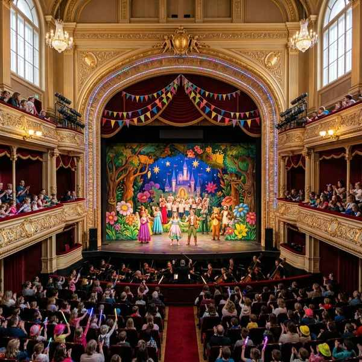
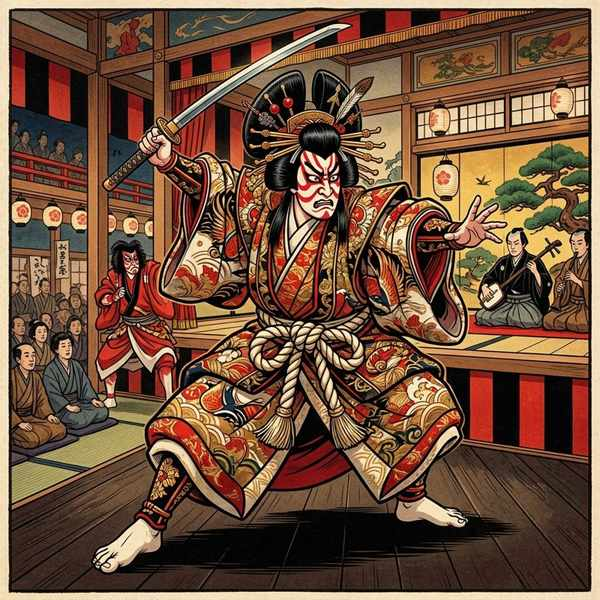
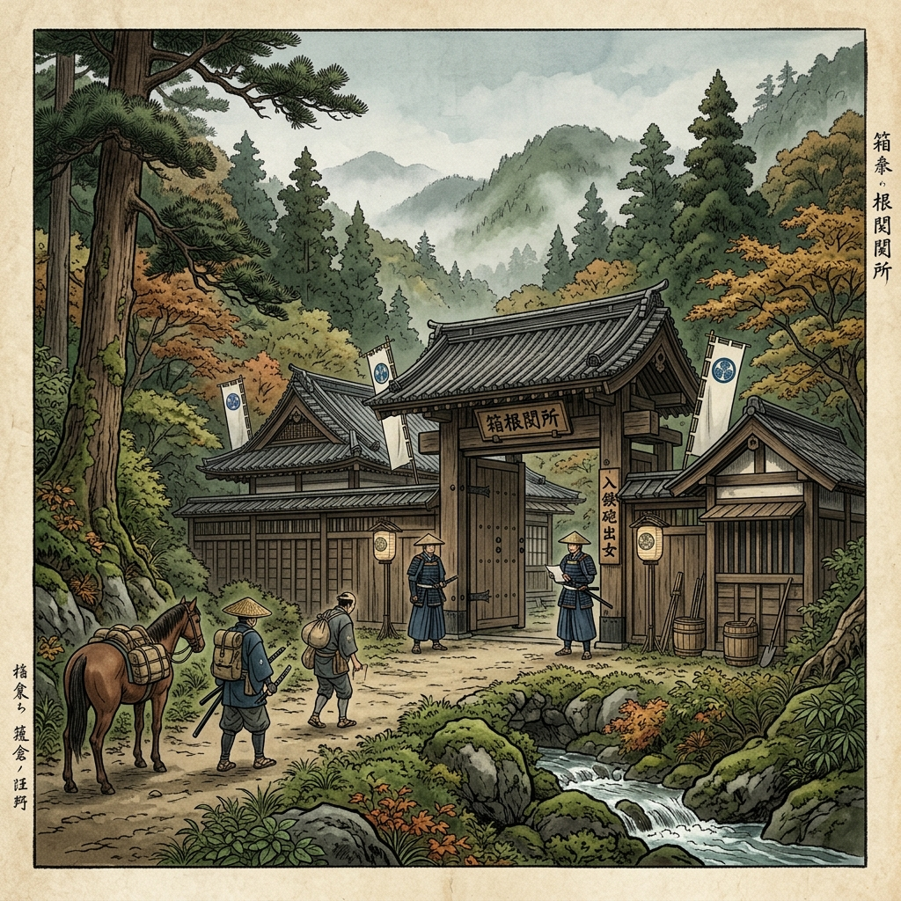
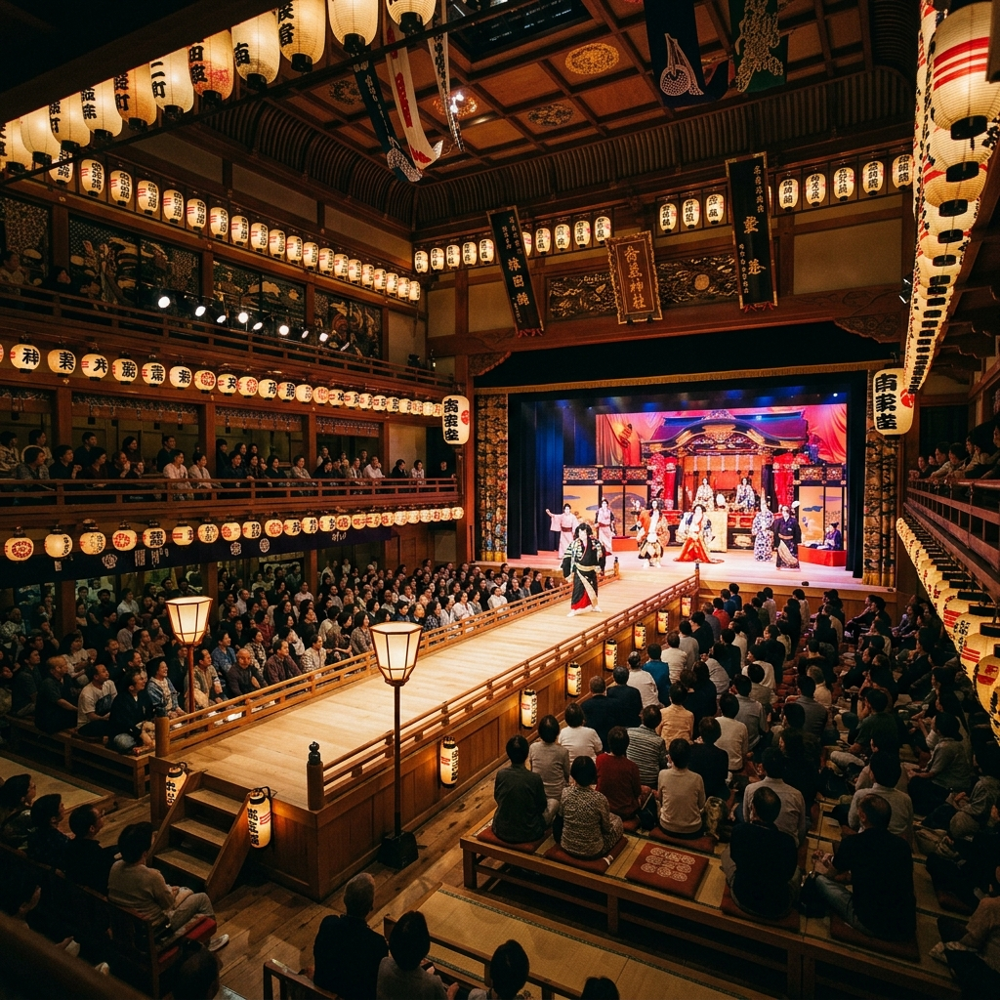
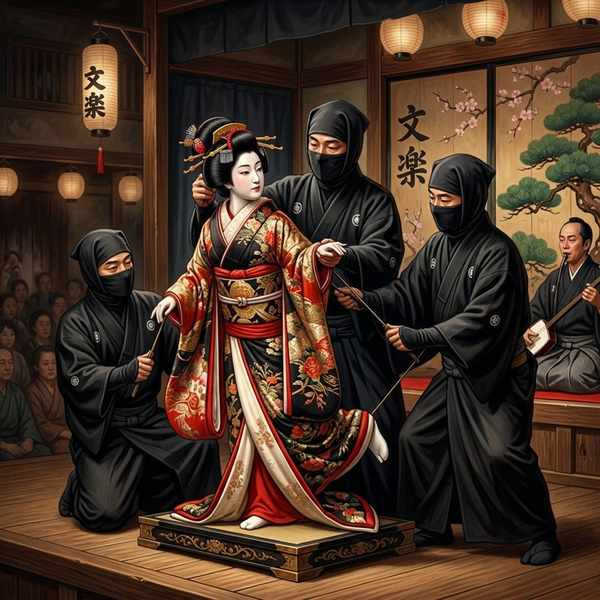

中学音楽（鑑賞曲）
鑑賞曲③ (アイーダ・歌舞伎「勧進帳」・文楽)
西洋の歌劇であるオペラの傑作「アイーダ」、そして日本の誇るユネスコ無形文化遺産である伝統芸能「歌舞伎」と「文楽（人形浄瑠璃）」の3作品を解説します。演劇と音楽が融合した「総合芸術」としての特徴や、テスト頻出の重要キーワードを整理しましょう！
1. ヴェルディ「アイーダ」

音楽・文学・美術・舞踊などが融合した「総合芸術」であるオペラ（歌劇）。
① 基本データ
- 作曲者：ヴェルディ（イタリア出身の後期ロマン派を代表する作曲家）
- 演奏形態：オペラ（歌劇）
- オペラの定義：演劇に音楽、文学、美術、舞踊などの要素を組み合わせた総合芸術。
- 伴奏：オーケストラ（管弦楽）が担当します。
- オペラの起源：16世紀末にイタリアで誕生しました。
- 幕の数：全部で4つの幕からできています。
- 物語の舞台：古代エジプト
- あらすじと分類：エジプトの将軍ラダメスと、敵国であるエチオピアの王女アイーダの愛と葛藤を描いた悲劇（ひげき）です。
2. 歌舞伎「勧進帳（かんじんちょう）」



左：歌舞伎役者の隈取 ／ 中：勧進帳の舞台「安宅の関」の挿絵 ／ 右：客席を縦断する「花道」
① 基本データ
- 成立した時代：江戸時代（慶長年間に「出雲のお国」がかぶき踊りを始めたのが起源です）
- 使う音楽：長唄（ながうた）（三味線音楽の代表格で、劇的な物語を長く歌い上げるもの）
- 音楽の三つの役割：
- 唄方（うたかた）：物語の言葉や感情を歌う役割。
- 三味線方（しゃみせんかた）：伴奏や曲の雰囲気を奏でる役割。
- 囃子方（はやしかた）：打楽器や笛を演奏し、効果音やリズムを作る役割。
- 囃子方が使用する主要楽器：小鼓（こづつみ）・大鼓（おおつづみ）・能管（のうかん）（この3つは特に記述で出題されます）
② 「勧進帳」の物語と演出
- あらすじ：兄・源頼朝に疑われ追われる身となった源義経一行。弁慶は義経を守り、変装して関所を越えようとします。
- 安宅の関所（あたかのせきしょ） ➔ 石川県小松市にあった関所。ここで関守の富樫左衛門に怪しまれます。
- 勧進帳の読み上げ ➔ 弁慶は疑いを晴らすため、手元にあった白紙の巻物を取り出し、さも本物の勧進帳（寺院建立の寄付帳）であるかのように堂々と読み上げます。
- 延年の舞（えんねんのまい） ➔ 関所を通ることを許された後、弁慶が感謝とお礼のために舞う、古風で厳かな舞。
- 飛び六方（とびろっぽう） ➔ 劇のクライマックスで、弁慶が主人・義経の後を追って引き揚げる際に行う、手足を大きく豪快に振って進む歌舞伎独特の演技。
- 花道（はなみち） ➔ 飛び六方を行う舞台から客席へとまっすぐ貫く通路。
- 隈取（くまとり） ➔ 歌舞伎独特の化粧法。顔の筋肉や血管を誇張するように赤や青の線を引くもので、弁慶は強い正義感を表す赤色の隈取を施します。
3. 文楽（ぶんらく）

太夫の熱い語りと太棹三味線の響き、3人の息が合った地唄と人形の動きが一体となる伝統人形芝居。
① 基本データ
- 別名：人形浄瑠璃（にんぎょうじょうるり）
- 成立した時代：江戸時代（17世紀末に大坂で成立しました）
- 創始者：大坂で「義太夫節」を始めた竹本義太夫（たけもとぎだゆう）。
- 使う音楽：義太夫節（ぎだゆうぶし）（浄瑠璃の代表的な一流派）
- 演奏形態：語り手である太夫（たゆう）と、伴奏の太棹三味線（ふとざおしゃみせん）がペアで演奏します。太棹三味線は通常のものより棹が太く、低く力強い音が特徴です。
② 三人遣い（さんにんづかい）の仕組み
文楽の主要な人形は、息を合わせて3人の人形遣いで操られます。
- 主遣い（おもづかい） ➔ 人形の「首（かしら・顔）」と「右手」を操るリーダー。
- 左遣い（ひだりづかい） ➔ 人形の「左手」を操る。
- 足遣い（あしづかい） ➔ 人形の「両足」を操る（女性の人形には足がないため、裾を動かして足があるように見せます）。
③ 代表的な演目
- 『新版歌祭文（しんぱんうたざいもん）』 ➔ 大坂を舞台に、久松とお染・お光という2人の女性をめぐる悲劇的な三角関係の恋愛模様を描いた名作。
- 『義経千本桜（よしつねせんぼんざくら）』 ➔ 源平合戦で平家が滅亡した後、平知盛など平家の武将たちが生き延びて、義経への復讐を企てる歴史ファンタジー。
🔥 定期テスト対策・暗記のコツ
① オペラの「総合芸術」と発祥地
オペラは音楽・文学・美術・舞踊を合わせた「総合芸術」であること、また発祥地は「イタリア」（16世紀末）であることを選択肢や穴埋め問題でよく聞かれます。必ず暗記しておきましょう。
② 勧進帳の「飛び六方」と「安宅の関」
弁慶が花道を退場する際のアクションは「飛び六方（飛び六法）」です。また、物語の舞台となった関所は「安宅の関所（あたかのせきしょ）」です。漢字で書けるように練習しておきましょう！
③ 文楽の「三人遣い」の役割分担
主遣いが「首（顔）と右手」、左遣いが「左手」、足遣いが「両足」を担当します。「主遣いが何を操るか」は本当によく出題されるため、右手と首であることを確実に暗記してください！